台 大 完 全 指 南
NTUWL Guide ver. κ
made by ChingRu
道歉啟事
這份簡報可能會以台大為基礎
所以可能要跟台科大的同學說聲 SorryQQ
可以去問另外一個帥哥學長
I NEED WIFI RRRR
馬斯洛需求金字塔第二層就是 wifi 啊
附帶一提，最下層是電池
▼
NTU
會跑出一個要登入的網頁
之後鍵入你的計中帳號密碼登入
ntu_peap
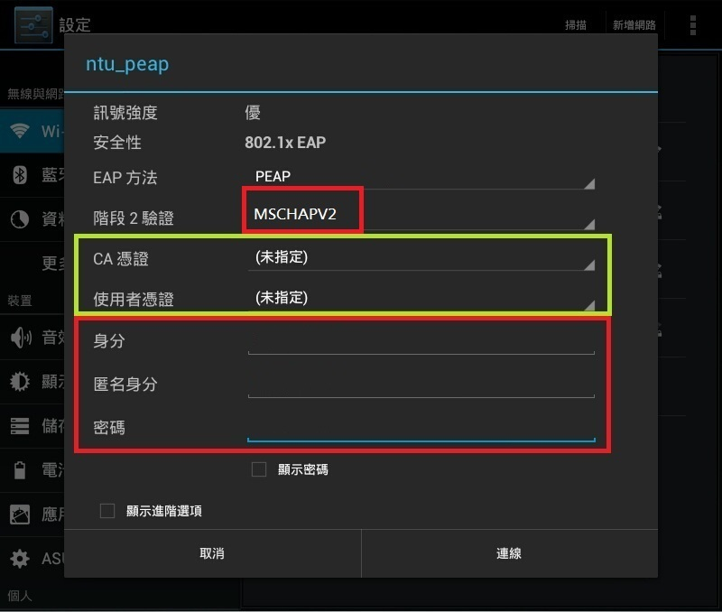
ntu_peap
在「身分」鍵入學號、「密碼」鍵入計中的密碼
在「EAP」選擇「PEAP」
「階段 2 驗證」請選擇「MSCHAPV2」
「CA 憑證」及「使用者憑證」選擇「未指定」
重要時程
重要時程
重要時程
剩下的自己翻一翻行事曆
基本上記得啥時期中期末啥時放假就好惹
我在哪裡？
你現在在「第二活動中心」
▼

我是誰？
▼
學號
每個人的學號都代表你的身分
Ｂ０５１０２０●●
| Ｂ | Bachelor degree，學士 |
| ０５ | 105 學年度入學生 |
| １ | 院別，這裡是文學院 |
| ０２ | 系／組別，這裡是外文系 |
| ０●● | 入學編號 |
院別和系別
| 文學 | 理學 | 社科 | 醫學 | 工學 | 生農 | 管理 | 公衛 | 電資 | 法學 | 生科 |
| １ | ２ | ３ | ４ | ５ | ６ | ７ | ８ | ９ | Ａ | Ｂ |
點我看系別的代號
那葛我要怎麼回家啊
你剛剛怎麼來的就怎麼回去啊
▼
如果你要搭火車的話
從公館捷運站搭到中正廟
接著轉搭淡水信義（Ｒ）回台北車站
再搭回中壢／內壢／桃園等火車站
到了台北車站搭高鐵，再轉機捷可以到大園
如果你要搭公車的話
在基隆路上有
９００１ 經大溪，到中壢
９００９ 經國際路，到桃園
９０８９ 經八德大湳，到桃園
在羅斯福路、捷運站對面的公車道有
亞聯可以回龍潭和新竹
想要知道更多回龍潭的一百種方法來問我
或是去問問這些學長姊
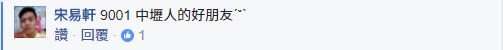 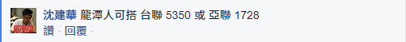 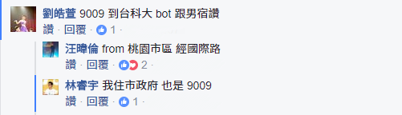
這些
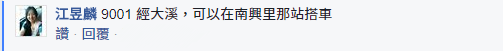 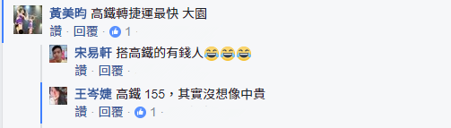 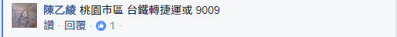 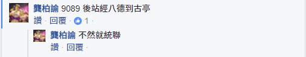
和這些
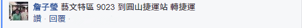 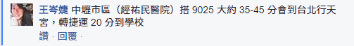

欸欸台大好大喔ＱＱ
無用知識：台大擁有全台占地１％的土地
▼
所以你一定需要
一匹優秀的炫★砲坐騎
如果可以的話用二手的就好
全新的有被幹走的可能喇我覺得
不過二手車市場很搶手，有車才是真的
那腳踏車哪裡買？
１）找要畢業的學長姊買二手車
２）上出清台大社團找二手車
３）去附近車行買全新的 大概＄２０００
４）熬夜去排水源的拼裝二手車 一台＄４００
５）自己騎上來
騎車要注意什麼？
１）記得要上網申請車證，被拖吊時會收到信
不過我是被拖了之後去領車順便拿的
２）亂停車的話會被可怕的水源阿伯拖走喔！
３）拖車場又遠又熱，你不會想去的
４）被拖第三次之後都要付５０元保管費
５）在校外也會被交通大隊拖走喔！
還要去要去更遠的龍門國中領喔
你剛剛一直說的水源在哪裡啊？
領車證、被拖走要領車、去排隊買二手車都在這裡
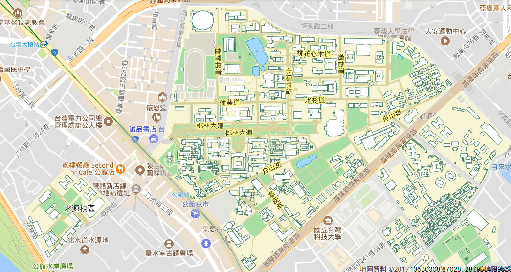你可能一定要學會如何
在下雨天時一邊撐傘一邊騎車
不過下雨天還是建議乾脆在宿舍睡覺吧
因為單手騎車真的蠻危險的
但這應該可以排進去大學生必備技能之一惹
最重要的就是
小心馬路三寶和移動神主牌
不過如果自己變做三寶就沒什麼好怕的了嘻嘻
我以後要住哪裡啊？
▼
台大可以選擇住宿舍
或是
ＢＯＴ套房
學生宿舍
男一舍（四人房）混一舍 每學期＄８２００
大一女（四人房） 每學期＄９７００
包含水費（公共浴室）、電費
不含冷氣錢，自己要跟室友喬然後ｓｈａｒｅ
宿網有１１２ｉｐ，據說有限制一天６Ｇ
實際上一天傳１００Ｇ我試過好像也不會鎖
宿舍怎麼分這麼多區？
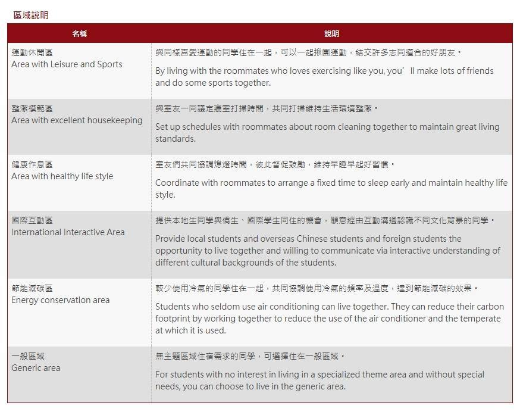
其實我覺得根本沒差
運動休閒區也可能遇到肥宅
整潔模範區也可能遇到噁人
健康作息區也可能遇到夜貓
國際互動區可能全都台灣人
節能減碳區這新跑出來的我不清楚
總之，室友其實還是看運氣
那如果我遇到很雷的室友怎麼辦...
半夜不睡覺的、愛用機械式鍵盤的、愛在房裡用樂器的、環境整潔被死當的...
無解，恭喜中大獎！！好好忍耐ㄅ嘻嘻 ^^
不過在這之前
先跟爸媽確認一下
你本人、你爹娘「三人」戶籍是否都
設於雙北、基隆市以外「滿兩年」以上
換句話說只要有一人的戶籍設在天龍區或未滿兩年
你就沒資格住宿舍喔
如果我被我爸或我媽的戶籍
ｇａｎｋ怎麼辦啦！！？？
害我沒宿舍住！！ｓｅｎ７７！！
你還有
ＢＯＴ可以住
水源ＢＯＴ（水源校區）
長興ＢＯＴ（長興街上）
單人房 每個月＄７４００
雙人房 每個月＄４９００
三人房 每個月＄４４００
看起來蠻高級的，而且還有獨立衛浴
只包含水費，不含電費、冷氣費、寒暑假也收費

宿舍好抽嗎？會不會抽不到
理論上只要符合戶籍的規定都住的到
但是桃園抽籤的順序好像在最後面
有時候候補可能一下就有了，也有可能要等半年
總而言之就是聽天由命
宿舍東西會不會被偷走啊？
女宿的話要刷卡進出，所以相對安全
但是男一擁有一顆非常開放的心
六個門 365 天 24 小時開放給所有人！
【悲報】
男一要有門禁了
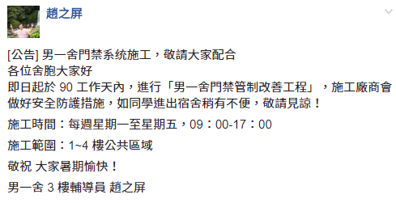學分是什麼？
▼
你可以把他想成一種集點遊戲
只是要集滿點數才能畢業
學分有三種
必修：顧名思義就是一定要修完才能夠畢業
選修：幾種課裡面選幾種，每個系都不一樣
通識：各系有指定領域，自己去系上網站查
通常一學分 = 上課一小時，每堂課都三到四學分
不過像實驗課這種一學分三小時的就...
我要畢業的話要修哪些學分？
通常系網都會有寫，注意入學年度適用
或是點我查詢
共同必修有哪些？
１）大學國文（原大一國文，至少三學分）
２）大一英文（上下共六學分）
３）大一體適能（上學期一學分）
４）服務學習（看系上安排，零學分）
不管你讀什麼系，都一定會要修這幾個
都大學了還要修國文喔？
大學的國文課跟高中差蠻多的就是了
總而言之，你要畢業至少要修一學期的國文
多修的第二學期可以用來抵 A1-A4 通識三學分
換句話說，依現行規定，畢業要修畢通識 15 學分
組合一：通識 15 學分 + 國文 3 學分
組合二：通識 12 學分 + 國文 6 學分
大一英文怎麼免修？
於８／１０～８／１８提出申請
１）全民英檢中高級通過
２）托福（TOEFL）９３分以上
３）雅斯（IELTS）６．５分以上
４）劍橋國際英語認證（FCE）Grade B 以上
要怎麼選課啦？
▼
有沒有選課懶人包Ｒ
１）先把必修跟大一體適能選進去
２）把大學國文和大一英文的老師選好選滿
有些系可以用別的二外充當英文，自己查
然後外文系不用管大一英文
３）然後把通識、新生專題塞好塞滿
４）最後別忘記了最廢的服務學習
我要怎麼知道一堂課好不好？
你可以問學長姊
或是上ＰＴＴ的ＮＴＵＣｏｕｒｓｅ版搜尋
如果不會用ＰＴＴ的話... 等一下會講
不過大家的話還是當參考就好，實際上變數太多
別人覺得超棒的課你可能上過才覺得很ㄏㄏ
不過
先捫心自問想想
你是想選學的到東西但是很硬的課？
還是想要課很鬆，但是不知道在幹嘛的課？
所謂一堂課
| 甜的 | 就是給的分都很高，多出現在通識和●院 |
| 涼的 | 就是上課很輕鬆，甚至只看出席就給分數 |
| 扎實 | 有讀有分，沒讀沒分，分數靠自己來掌握 |
| 硬爆 | 好課值得一修再修，好老師就該多多見面 |
| 信仰 | 個人差嚴重，只有信仰十足的信徒能領會 |
又涼又甜？甜但不涼？涼但不甜？不良又不甜？
當然是要選又甜又涼的課 ^^
實地演練一下
進入台大課程網
https://nol.ntu.edu.tw/nol/student/


正式選課
進入 台大網路選課系統
https://if177.aca.ntu.edu.tw/index.php
誠實的填寫他
然後進入系統，點選「匯入預選課程」


切記
在「台大課程網」的「課表」都只是模擬的
只有在「選課系統」上的課表才是真的有選的
所以不要忘記要進入「選課系統」選課
接下來是選課常見的問題啦
很多人同時段都選很多課耶？
很正常的事
學分選太多可退、但太少卻無解
除了必帶，沒人能保證你一定選的到課
所以同一個時段選多堂一點
然後在選課系統排志願序
避免完全都選不到課的現象發生
什麼是「必帶」？
就是進階版的必修，直接出現在你的課表裡。
有些大系會拆班，必帶就是指定你的老師。
有的系可以退掉換老師、有的系不行，
建議自己問系上或你的學長姊。
想選的課跟必修衝堂怎麼辦？
所謂魚與熊掌不可兼得就是這個意思ㄅ
不過有些跨院共同必修
如微積分、普物、普化等都會有兩種時段以上
自己找找看看可不可以換班吧
我能修多少學分？
每學期最少應該修 15 個學分
如果特殊狀況要低修，要寫學生報告書
正常而言，最多可以修 25 個學分
若「本學期 GPA＞3.9」，下學期可以超修到 31 學分
輔系可超修到 31 學分，雙主修則可超修到 33 學分
如果你有修教程，也可以修到 31 學分
我很想修「限本系」的課怎麼辦？
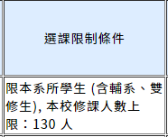
你可以去加簽！
文組也可以簽微積分、理組也可以簽世界史
加簽的種類
會寫在台大課程網裡面，自己看清楚
第一類：不限人數、自己上網直接加選
第二類：上課或寫信跟老師要授權碼後上網填
第三類：有限人數，上網填再等抽籤
另外還有人工加簽、你追我躲、大地遊戲等等
備註的「統一教學」是什麼意思？
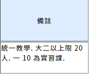
大多是瀟灑的數學系開的微積分會這樣
就是所有的班的考試都統一進度
換句話說，要不要去上課、要聽哪個老師隨便你
期中期末的考卷每一班也都長的一樣
反正就是考試的時候記得回原班考就好惹
早八的課該不該選啊
你自己覺得ㄋ！^^
都大學惹還要早起像話ㄇ！
Ａ課可不可以抵Ｂ課？
你覺得我會知道逆！自己去問系辦最準
一般來說課號相同的會被視為同樣的課
但課名相同的卻不一定會被視為同樣的課
另外如果有分成甲、乙、丙的課
前者（難）一般來說可以抵後者（易）
例如必修要微乙，一般可以用微甲來抵
早點去選課、
志願序有差別嗎？
完全沒差
跟填指考志願一樣，志願只跟自己比
第一天就跑去選課跟最後一天才選課其實都可以
全都靠電腦抽籤看運氣囉
「新生專題」是什麼？
只開給大一新生上的課，上課方式多元
有的談心、談星空、談人生、談政治
而且給分方式只有 pass 和 fail，不算 GPA
基本上不要太混都會過，湊學分利器
還可以認識別系的同學讚讚
沒選到課怎麼辦啦 QQ
如果你在第一階段沒選到，你還有第二階段可以選
如果還是沒有，就只好第三週後跑加簽了
有的老師隨你簽，有的用抽的，有的完全不給簽
反正就是看老師跟助教的心情惹
「戀愛巴士」是啥？
通識 A8 的「森林生物多樣性概論」
傳說中選上就有 A + 的課
會去山上五天四夜，看山看樹看星星
所以又稱戀愛巴士嘻嘻
成績
▼
ＧＰＡ是什麼？
ＧＰＡ就是一種分數轉換的等第標準
據說是為了避免用百分制會崩潰ＱＱ
或是讓學生對那幾點幾分斤斤計較
那幹嘛不分 pass 跟 fail 就好ㄏㄏ
| A+ | A | A- | B+ | B | B- | C+ | C | C- | F |
| 4.3 | 4.0 | 3.7 | 3.3 | 3.0 | 2.7 | 2.3 | 2.0 | 1.7 | 0 |
| 95 | 87 | 82 | 78 | 75 | 70 | 68 | 65 | 60 | 50 |
點我查看 GPA 對照表
ＧＰＡ很重要嗎？
廢話
以後出國交換、雙轉輔很多都只看ＧＰＡ喔
尤其是管院各 Elite 系，想雙轉沒書卷就是砲灰
哇可是我在選課的時候不小心選到地雷 QQ
你可以停修！
停修是在加退選截止後唯一的停止修課方法
但是一學期只可以停修一科
而且會在成績單上註明你這科停修過
有「都市傳說」是會影響未來國外學校申請喔
轉系｜雙主修｜輔系
▼
決定目標
我到底要讀啥？
我內心的目標到底在哪？
我到底要轉、雙、還是輔？
我對我現在讀的系有興趣嗎？
我有辦法從我現在讀的系畢業嗎？
我要從我本來的系轉走！
轉系的條件怎麼看？
不管怎麼樣，先看看你原系的轉出規定吧
轉出規定只要沒到，原系所根本不會給你轉
即使你別系轉入條件達標，也沒辦法轉過去
有轉出條件的系（１０６）
中文 哲學 人類 日文
戲劇 地質 地理 大氣
醫學 物治 化工 工科
生工 森林 農經 生傳
昆蟲


總而言之
| 看成績 | 把 GPA 衝高、能拿卷更好 |
| 用考的 | 考實力，宇宙間最公平的競爭方式 |
| 交備審 | 可以先去修他們系的課 |
| 如果可以跟神一樣，相信會脫穎而出 | |
| 或者是看你有沒有特殊表現囉 | |
| 要面試 | 看臉 ^^ |
接下來是雙轉輔常見的問題啦
台大 484 很好轉雙輔？
我覺得喇
問這種問題的我建議去重考比較快
也不看看每年多少人死在沙場上
所謂長江後浪推前浪，前浪死在沙灘上
每個系的錄取率如何啊？
台大轉雙輔官網
歷年轉系統計
歷年雙輔統計
基本上可以看看每年跟你搶的人有多少
或是他們到底有沒有收第二志願
我可不可以從Ａ轉Ｂ雙Ｃ輔Ｄ？
可以
你可以在開放申請（通常在學年底）時一起丟申請
但是你學分和人生可能會爆掉
這個時候就會要延畢了
所以如果我Ａ雙Ｂ的話，
要畢業不就要修超多學分？
對啊啊不然咧？
扣掉部分選修、或是通識可以互抵
如果你科系的性質相差甚遠
你大概要修 128 + 128 - 30 學分左右
所以一般都會要延畢一到兩年
反正大學可以唸六年呀嘻嘻
有沒有不給轉雙輔的系？
基本上所有系都可以去轉雙輔
但是有些系名額開超少、還常常不足額錄取
但是這些系的學生要去雙輔其他是可以的
我可以轉幾次系？
嗚嗚看看可憐的我
一個學號只能轉一次啦
而且轉過去的學號不會變喔
如果轉系跟轉學考都上了咧？
同時考上同系的話會強制用轉系的方法
換句話說，沒辦法用這招改學號
如果同時轉雙輔都上同系？
神人 4ni？
「轉、雙、輔」越前面順位越高
也就是說你如果轉雙都上，會強制轉系
雙輔都上，會強制變成雙主修
雙主修跟輔系差在哪裡？
簡單來說就是
雙主修在畢業證書上會有兩個學位
輔系只會拿到輔系證明，沒有學位
而且輔系要求的學分數比較少
雙主修要修畢系所要求畢業學分才行
我可不可以本來Ａ，去雙Ｂ，
最後不管Ａ，用Ｂ畢業？
可以
所以雙主修等於讓你有是否在原系畢業的選擇
雙主修放棄本系跟轉過去差在？
基本上是沒有差的
但前者可能會無法享用到該系資源、交換名額
系館和系學會的門禁也會卡住（可以去申請）
但是有人帶就可以進去惹
可不可以把大一的課都退掉
然後先去修我想轉的系的課？
不一定！
如果你原系的轉出規定要求要修畢大一必修的話
為了轉出去你還是要修完大一必修的！
反之，沒規定的話就退吧，所謂破釜沉舟ㄋ
事實上連必帶都可以退
蛤可是這樣一來
我原系的必修我都沒興趣學
導致ＧＰＡ很爛怎麼辦？
哈哈你看看你
重考
轉學考
簽下去囉
聽說輔系可以事後核可喔？
在 104 學年度後是這樣沒錯
但是有些課你不是正規的雙／輔學生
老師是不會給你加簽的
那雙主修可以事後核可嗎？
有夢最美，希望相隨
想太多惹
這樣大跳板時代不就來惹
ＰＴＴ
▼
ＰＴＴ是什麼？
telnet://ptt.cc
全台灣最大的論壇，沒有之一
全台灣最大的亂源，沒有之一
Ｐｔｔ跟台大有關的有ＮＴＵ（台大板）、
ＮＴＵＣｏｕｒｓｅ（課程評價板）、
ＤｏｕｂｌｅＭａｊｏｒ（雙轉輔板）、
ＮＴＵ－Ｅｘａｍ（考古題板）、
ＮＴＵ－Ｔｅｘｔｂｏｏｋ（二手教科書板）等
總而言之不會用的話就是你的損失了
更不用說還有許多莫名其妙的板，像是
Ｇｏｓｓｉｐｉｎｇ（八卦板）、
ｐａｒｔ－ｔｉｍｅ（打工板）、
Ｈｏｍｅｔｅａｃｈ（家教板）等等等
以及神奇的各種東西 ^^
值得你去尋找嘻嘻
所以要怎麼用啦？
如果要用電腦的話
因為ＰＴＴ是走 telnet 連線協議而非 http 協定
所以理論上不能用 firefox 或是 chrome 來連ＰＴＴ
當然，你還是可以透過 chrome 外掛來上ＰＴＴ
方法一
利用 PCMan
http://pcman.ptt.cc/ 下載並執行
如果沒特別需求，lite 和 novus 其實都可以
方法二
利用 PTTChrome 擴充功能
點這裡
安裝，然後在應用程式內執行
方法三
直接透過網頁開啟
https://iamchucky.github.io/PttChrome/index.html
如果要用手機的話
自己上 play 商店、AppStore 搜尋 PTT 找相關 Apps
但其實 PTT 官方並沒有出任何官方的 Apps
請注意帳號安全
進去之後怎麼找板？


lass 分類看板」，然後按右推入。")


其他可能會用到的功能
| 在板上搜尋作者 | a |
| 在板上搜尋推文數 | Z |
| 貼上 | alt + P |
| 複製 | alt + O |
| 推、噓、箭頭 | 在文章裡面按 X |
| 回文到板上 | 在文章裡按 y |
| 發表新文章 | 在板上按 ctrl + P |
| 查詢所有可用功能 | 在任何地方按 h |
為什麼我不能發文或是推噓文啊？
在你想發文的板板上按 i 可以查看發文限制
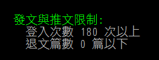你可以從 (U)ser＞(I)nfo 可以查看你的登入次數
然後一天就算登入一百次還是只能算一次喔，乖乖養帳號吧
ＮＴＵ Ｍａｉｌ
▼
台大學生都一定會有的信箱
所有跟學校有關的信都會寄到這裡來
他大概長這樣：
學號@ntu.edu.tw
信箱還可以用來找人！
當你使用學校的信箱時

只要在收件者鍵入你想找的學號

再按「檢查名稱」，就會跳出姓名惹。
該怎麼收信？
最簡單的就是用學校的官方信箱
http://ntumail.cc.ntu.edu.tw/
（推薦）或這是你也可以用 gmail 來收信
為什麼要用 Gmail 來收信？
１）因為學校信箱介面真的太陽春了
２）用 Gmail 之後，手機收到信會跳通知
３）你還可以讓 Chrome 也跳通知
４）總而言之我覺得這個比較好用喇


有關武友會
對回答有問題自己去問會長啊別找我
▼
台科大為啥可以加入？
「因為基隆路一家親。」
「就是啊，台科大並沒有所謂供武陵人參加的桃友會或武友會，為了讓台科大的武陵人也能跟我們一起同樂，於是就開放他們參加啦。」
武友會費的用途會公開嗎？
「會費的運用在每學期末總結時會公開給大家看帳目，絕對每筆都是用在大家身上的。」
沒繳會費會被排擠嗎？
「沒繳會費當然不會被排擠，但是參加其它武友會的活動（會烤、會卡等）就要付額外的錢。」
各種雜亂的問題
▼
上大學後就可以脫魯嗎？
凡事靠自己，謝謝
新生書院到底該不該去？
怕麻煩的話去了比較方便
書院時會體檢、註冊、發學生證
不過如果有經濟問題、有事、對康輔過敏
你不去其實真的不會怎麼樣
只是就要自己弄，比較累而已
好用的 fb 社團有哪些啊？
台大二手書 NTU second hand books
59 屆台大武友會
我該買筆電還是桌電？
問這個問題要記得附上預算啊
帶筆電作筆記都是假的，帶去玩才是真的
以後就會知道紙和筆永遠最好用
一樣的錢，桌電的效能是筆電的兩倍以上
但是筆電的便利性也不得忽略
| <10k | 桌 | G4600+B250+HDD/SSD+8G |
| 10~20k | 桌 | R5+B350+HDD/SSD+Rx570/1060(3)+8G |
| 20~30k | 筆 | MBA/UX410UQ/Swift5 |
| 桌 | R5+B350+Rx580/1060(6)+8G*2 | |
| 30~40k | 螢 | 筆電再加個外接螢幕，雙螢幕很方便 |
| 桌 | R7+B350+Rx580/1070(8)+8G*2 | |
| 40~60k | 都 | 都買最方便，20k桌電+40k筆電 |
| >60k | 滾 | 預算這麼高問屁啊 |
我要去哪裡印講義啊？
除了自己扛事務機到宿舍印
或是到男一舍 B1 、小福三樓、共同一樓有影印店
或是到校外找店家幫你印
其實每學期計中有 $100 的 quo 塔可以印喔！
還可以用這筆錢去 3D 列印（以公克計）
你不想用的話拜託分我用
考前惡補該去哪？
最棒的選擇就是總圖地下室自習區
部分區域有開放可以帶筆電
部分區域還有插座可以用
24 小時開放，歡迎夜宿
（體感）恆溫 20 度
訊號超爛，讓你能用功讀書
大學是不是比高中更難交朋友？
凡事皆有可能，也凡事皆有例外
當邊緣肥宅也不錯 R 484？
（@ɷ@）
ಠ_ಠ
ಥ_ಥ
◢▆▅▄▃崩╰(〒皿〒)╯潰▃▄▅▇◣
宿舍附近哪裡有消夜可以ㄘ><
這葛本來是有被要求要講的
但是我想想又覺得
找東西ㄘ應該是人類的本能了吧...
你們應該也不會想看我在台上介紹ㄘ的才對
ㄛ對了我覺得男一滷味算好ㄘ的
那葛路上好像有怪怪的人耶
畢竟你現在念台灣大公園附屬大學
什麼人都有，什麼人都不奇怪
你也可以叫他們 NPC
顧名思義就是你不犯他，他不犯你的一群人
著名人物有舊體阿嬤、早安哥、阿密陀佛姊等
系費好貴喔要不要繳系費？
這整篇都我的個人意見ㄛ！
還有問題ㄇ？
你可以從這再看一次，或是分享給別人看這份指南
http://rutw.github.io/ntuguide
武友會mod：http://rutw.github.io/ntuwlguide